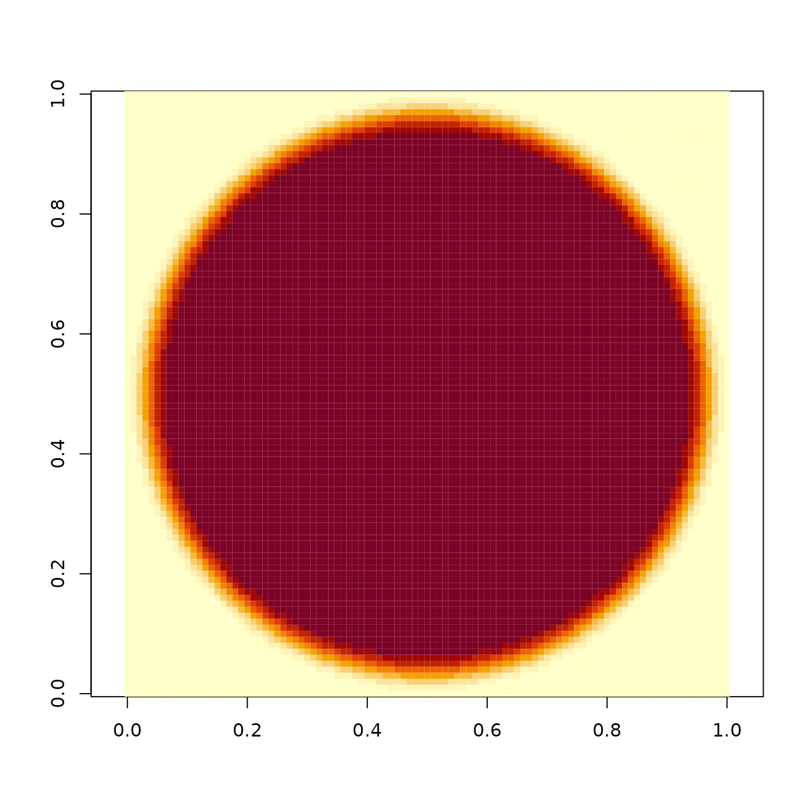

Generates a 2D disk with a gradual falloff.
Disk generated using the following formula:
(-22.35 * cos(1.68 * r2) + 85.91 * sin(1.68 * r2) ) * exp(-4.89 * r2) + (35.91 * cos(4.99 * r2) - 28.87 * sin(4.99 * r2)) * exp(-4.71 * r2) + (-13.21 * cos(8.24 * r2) - 1.57 * sin(8.24 * r2)) * exp(-4.05 * r2) + (0.50 * cos(11.90 * r2) + 1.81 * sin(11.90 * r2)) * exp(-2.92 * r2) + (0.13 * cos(16.11 * r2) - 0.01 * sin(16.11 * r2)) * exp(-1.51 * r2)
The origin of the coordinate system is the center of the matrix.
generate_2d_disk(dim = c(11, 11), radius = 1, rescale_unity = FALSE)Default c(11, 11). The dimensions of the matrix.
Default 1. Radius of the disk, compared to the dimensions. Should be less than one.
Default FALSE. If TRUE, this will rescale the max value to one. Useful
if wanting to plot the distribution with plot_image().
if(run_documentation()){
image(generate_2d_disk(101), asp=1)
}
